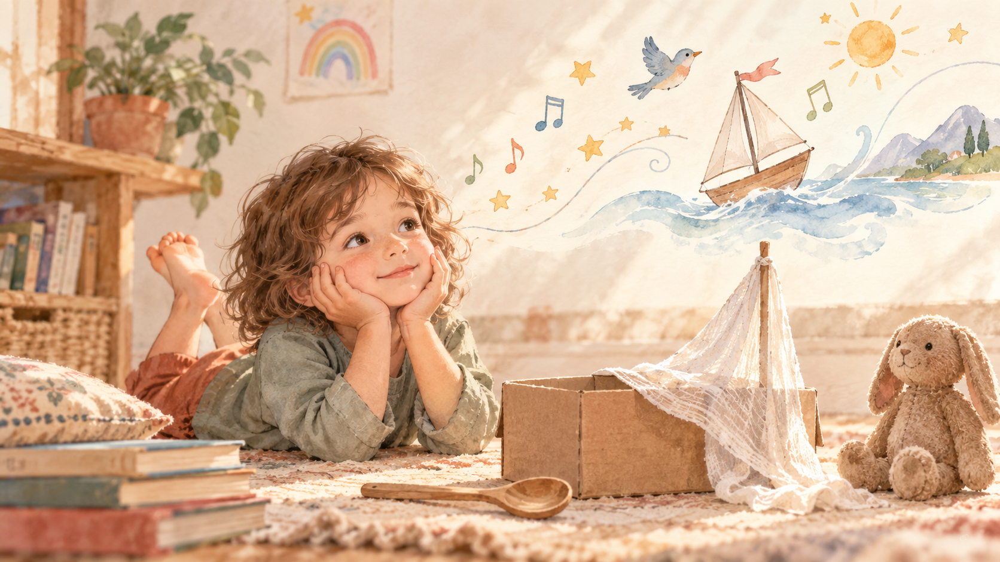

הבחירה שלי: לתת לשעמום מקום
יש לי וידוי קטן: לפעמים, כשילד אומר לי "משעמם לי", אני בוחרת לתת לזה מקום.
לא ממהרת למלא את הרגע. נותנת לשקט להישאר קצת יותר זמן ממה שנוח לי, בלי להציע מיד משחק, מסך או רעיון.
זה לא תמיד פשוט. יש משהו בפנים שמתוח, שרוצה לעזור, להראות שיש לי תשובה מוכנה. הדחף הזה מוכר לי היטב - הוא מגיע כמעט אוטומטית, עוד לפני שהספקתי לחשוב. אני חושבת שהוא בא ממקום טוב: רוצה שהילד ירגיש טוב, רוצה להיות מי שתמיד יודעת מה לעשות. אבל לאט למדתי שזה לא אותו דבר כמו לעזור באמת.
מה קורה כשנשארים בשקט
אבל גיליתי שדווקא ברגעים האלה, כשאני נשארת בשקט, קורה משהו שאני לא הייתי יכולה ליצור בשבילו. עיניים שמתחילות לשוטט בחדר. יד שממששת חפץ סתם ככה. שתיקה שממשיכה קצת יותר ממה שציפיתי. ואז, לאט, משהו מתחיל לקרות.
כשיש מקום ריק, מישהו צריך למלא אותו. ולפעמים המישהו הזה הוא הילד עצמו.
זה נשמע פשוט, אבל יש בזה הרבה. דמיון לא מגיע מוכן ואורז. הוא צומח מתוך מרחב - מתוך זמן שאין בו הוראות, ומתוך קצת אי-נוחות שהילד בוחר להישאר בתוכה במקום לברוח ממנה. כשיש שקט כזה, הראש שלו מתחיל לחפש. הוא בונה, ממציא, מחבר דברים שלא היו קשורים קודם: קופסת נעליים הופכת לספינה, כפית הופכת למיקרופון. הוא הופך את השעמום לחומר גלם ביד.
יש קשר בין זמן לא-מובנה כזה לבין משחק דמיוני עשיר יותר. הילד שממציא לעצמו עולם מתוך כלום, בעצם מתאמן - והדמיון, כמו כל דבר, גדל מתוך תרגול. ככל שהילד מתרגל להמציא, כך קל לו יותר בפעם הבאה. זה לא קורה בבת אחת, וזה גם לא דורש הרבה - רק זמן, ואמון שהוא יידע מה לעשות איתו.
וכשהגירויים החיצוניים רבים מדי - מסכים, פעילויות מתוזמנות, תשובות מוכנות שמחכות בקצה האצבעות - נראה שנשאר פחות מקום לילד להמציא בעצמו. לא כי משהו נשבר בו, אלא כי הדמיון פשוט לא הוזמן להשתתף הפעם. הוא ממתין בצד, מוכן, אבל בלי תפקיד באותו רגע.
בשיעורים ובשירים שלי
בשיעורים שלי, כשילד משתתק באמצע שיר או פעילות, אני לא תמיד ממהרת למלא את השתיקה הזאת. לפעמים אני נותנת לה להישאר, ומחכה לראות מה הוא יעשה איתה.
זה נכון גם למוזיקה עצמה. אני מנסה לכתוב שירים שיש בהם רווח - מקום שהילד יכול למלא בעצמו: מילה שהוא ממציא, תנועה שהוא בוחר, קצב שהוא משנה. שיר שממלא כל שנייה בצליל לא משאיר הרבה לילד לעשות חוץ מלהקשיב. שיר עם קצת אוויר בפנים מזמין אותו להיות שותף, לא רק מאזין.
לפעמים זה נראה כמו הפסקה קטנה לפני פזמון, שבה הילדים יכולים להשלים מילה בעצמם. לפעמים זה שורה שחוזרת בלי מנגינה קבועה, כדי שכל ילד ימצא לה את הצליל שלו. זה לא תמיד מתוכנן מראש - לפעמים אני שומעת שיר שכתבתי ומגלה שהוא זקוק לרווח שעוד לא נתתי לו.
אני חושבת שזה חלק מהתפקיד שלי - לא רק ללמד שיר, אלא להשאיר בו מספיק מקום ריק שהילד יוכל להביא לתוכו משהו משלו.
מה זה אומר בבית
זה לא אומר לבטל טיולים, פעילויות או זמן משותף. זה פשוט אומר לתת לכמה רגעים ביום להישאר פתוחים - בלי תוכנית, בלי הצעה מוכנה.
אולי זה חמש דקות בדרך מהגן, בלי לשלוף טלפון. אולי זה אחר צהריים שבו אתם לא ממלאים כל רגע בפעילות. אולי זה פשוט לשבת ליד הילד כשהוא אומר "משעמם לי", ולתת לרגע הזה להישאר - במקום למהר ולפתור אותו.
זה לא תמיד נוח. לפעמים השקט הזה מרגיש כמו החמצה, כאילו צריך למלא אותו במשהו מועיל. יש לחץ אמיתי להיות הורה שממלא כל רגע בערך - בחוג, בפעילות, בלמידה. אבל השקט הזה הוא בדיוק המקום שבו הדמיון של הילד מתחיל לעבוד.
זה גם לא חייב לקרות בבית דווקא. זה יכול להיות בתור בסופר, בנסיעה ברכב, או בכל רגע אחר שבו יש פיתוי למלא את הזמן במשהו. הבחירה לתת לו להישאר ריק היא בחירה קטנה שאפשר לעשות שוב ושוב.
לא צריך לעשות את זה כל הזמן. אפילו רגע אחד ביום שבו אתם בוחרים לתת מקום, במקום למלא, יכול להספיק כדי שהילד יגלה שהוא יכול למלא את הזמן שלו בעצמו.
אני עדיין לומדת מתי לתת מקום ומתי למלא אותו. אין נוסחה קבועה, ולפעמים אני נוטה לכיוון אחד או לכיוון השני.
אבל אני שמה לב שכל פעם שאני נותנת לשתיקה להישאר קצת יותר זמן ממה שנוח לי, קורה שם משהו שלא הייתי יכולה לתכנן בעצמי.
בפעם הבאה שהילד שלכם יגיד "משעמם לי" - מה יקרה אם תחכו עוד רגע אחד לפני שתענו?
מה המחקר אומר
מי שסקרנ/ית להעמיק - שני מחקרים עומדים ברקע הדברים שכתבתי כאן: מחקר של Mann & Cadman מצא קשר בין זמן משועמם ללא גירויים חיצוניים לבין חשיבה יצירתית עשירה יותר שבאה אחריו, ומחקר שבדק ילדים בני 5-6 מצא קשר בין זמן מסך אקטיבי לבין פחות דמיון עצמאי במשחק שלהם.
חשוב לומר בבירור: שני המחקרים מראים קשר, לא הוכחה חד-משמעית שדבר אחד גורם לשני. הם תומכים בעיקרון שעומד מאחורי המאמר, אך אינם מוכיחים שכל רגע משועמם "יוצר" דמיון, או שכל זמן מסך "פוגע" בו.
מקורות עיקריים: Mann & Cadman, "Does Being Bored Make Us More Creative?", Creativity Research Journal (2014) · מחקר על זמן מסך אקטיבי ודמיון עצמאי אצל ילדים בני 5-6.